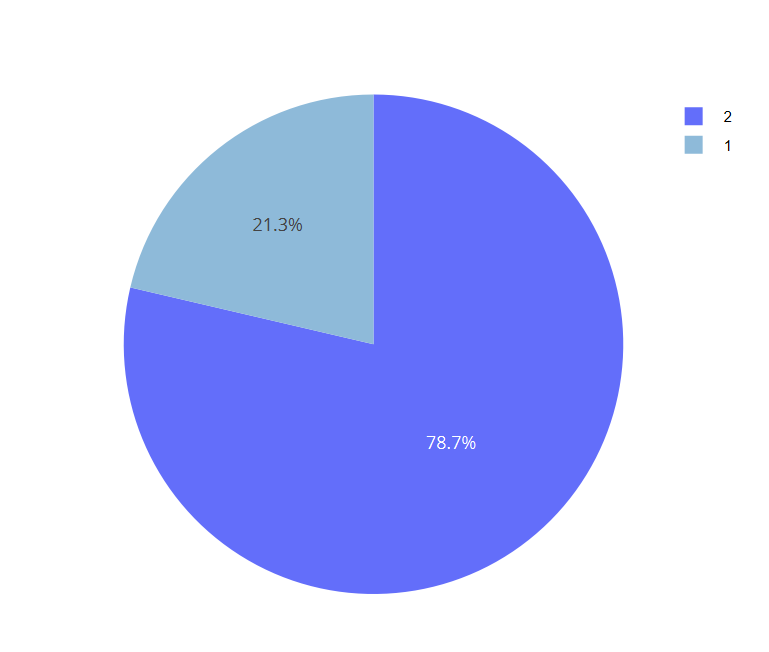
Annual means across the twelve monthly rasters. The 2021→2023 comparison showed an overall downward trend.
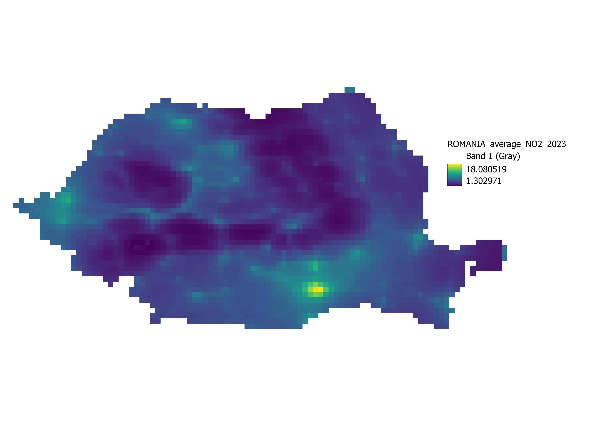
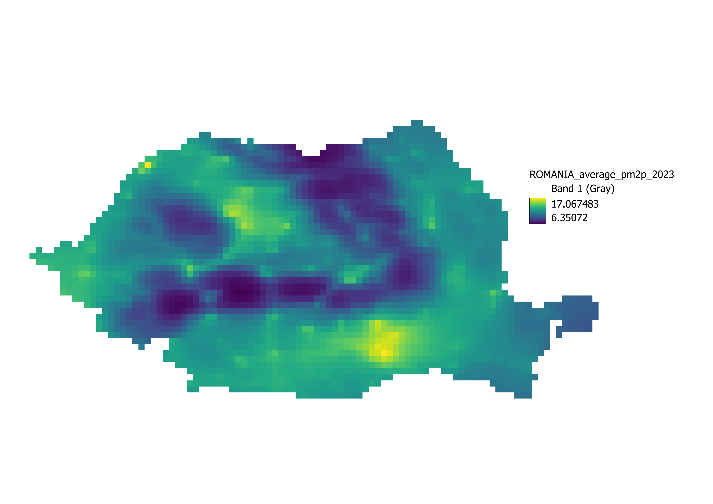
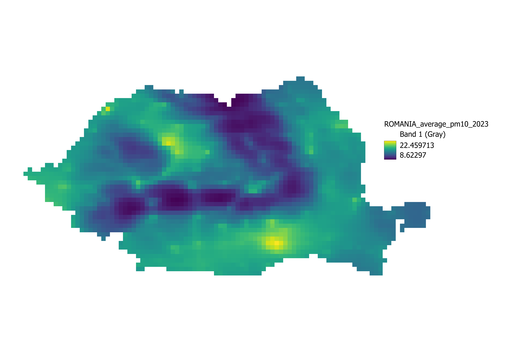
Five-level EEA classification.
NO2
The distribution followed population centres,
with lower values over forested zones.
PM2.5
PM10
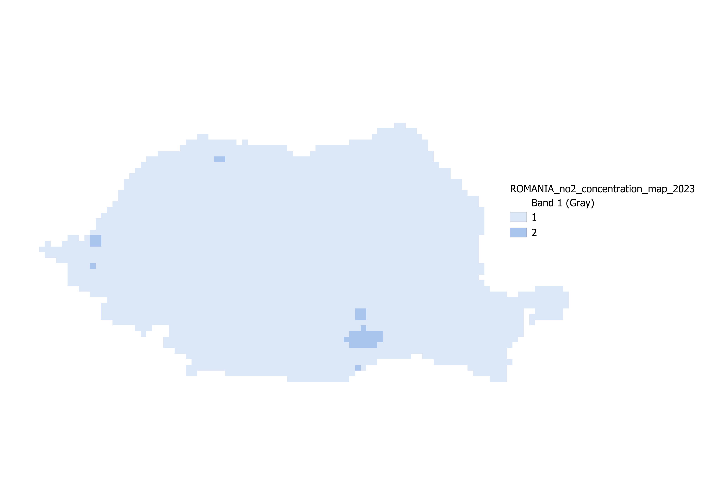
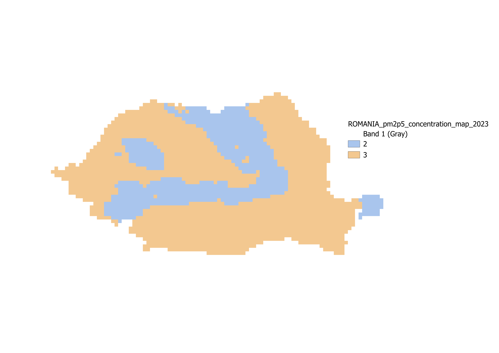
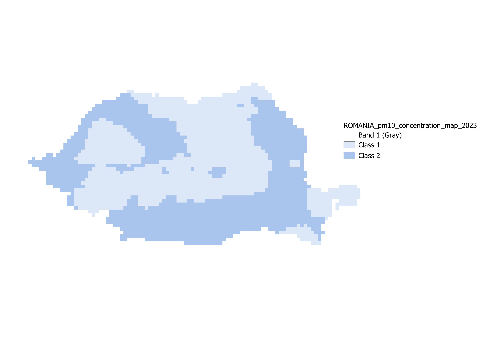
Difference between 2023 and 2021 annual means. Red = increase (risk),
blue = decrease (improvement), gray = stable.
NO2
The map shows an overall trend of stability across the
country with slight decrease of pollutant concentrations.
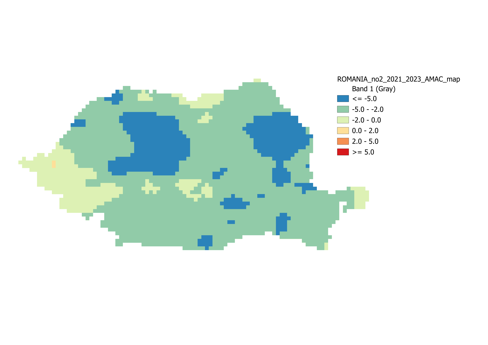
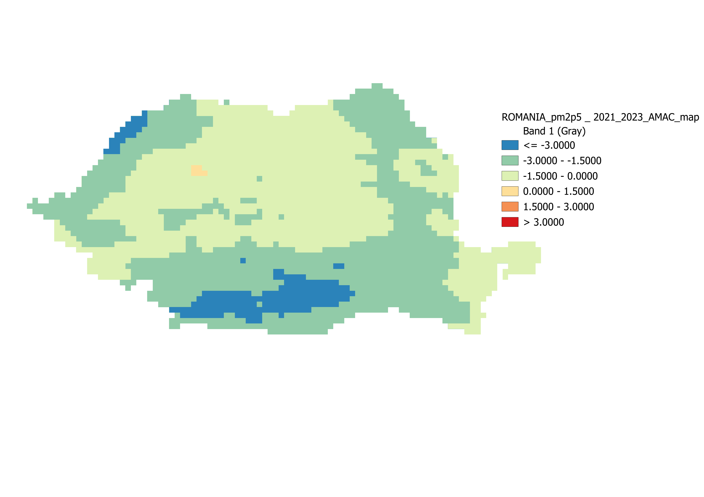
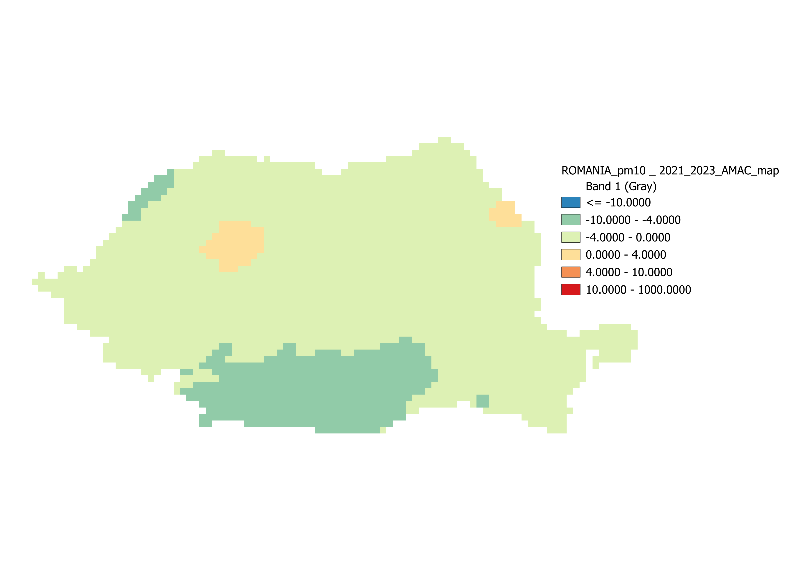
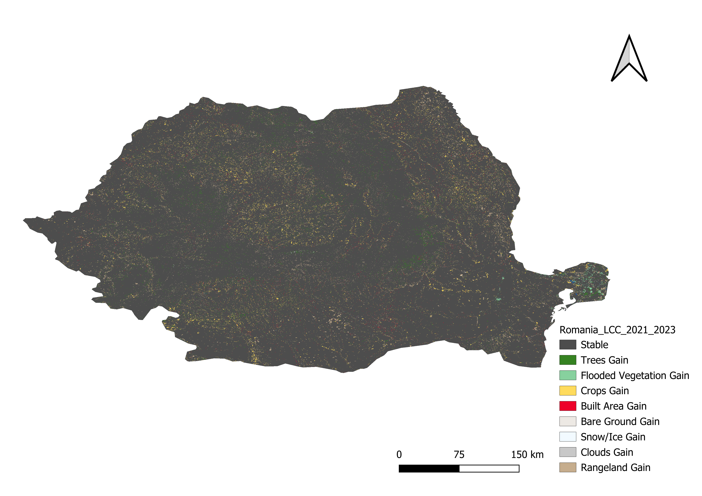
Looking at the land cover change map, we observe that the majority of pixels remained stable during the 2021–2023 period, particularly in the mountainous regions.
Among the detected changes, the Crops class is the most widespread land cover gain in 2023, occurring throughout much of the country. In contrast, the easternmost part of the country experienced a more localized but substantial land cover change, characterized by a marked increase in Flooded Vegetation.
A more detailed analysis of the transition matrix shows that the sources of gain and loss are far from random. In most cases, the primary source of gain and the primary source of loss each account for more than 50% of the observed transitions.
Rangeland was both the main source of loss and the main source of gain for the Trees and Crops classes. Moreover, the second and third most important sources of gain and loss were also similar for these two classes. For the Built Area class, Crops represented both the largest source of loss and the largest source of gain.
As already suggested by the land cover change map, all land cover classes exhibited high stability rates. The Built Area class had the lowest stability, although it remained high at 95.17%.
To complement the pixel-based analysis, we also quantified land cover changes in terms of area. Since pixel counts alone do not accurately represent surface area, we reprojected the raster to an appropriate projected coordinate reference system to minimize area distortion. After reviewing the coordinate reference systems commonly used in Romania, we reprojected the data to Pulkovo 1942/Stereo 70 (EPSG:3844) [5], calculated the area occupied by each land cover class, and expressed the results as percentages of the total area.
| Metric | Class | Pixels (%) | Area (%) |
|---|---|---|---|
| Stability Rate | - | 95.17 | 95.19 |
| Sources of Gain | Crops | 64.82 | 64.84 |
| Rangeland | 20.90 | 20.89 | |
| Trees | 12.28 | 12.26 | |
| Sources of Loss | Crops | 49.35 | 49.31 |
| Rangeland | 26.80 | 26.79 | |
| Trees | 22.19 | 22.22 |
| Metric | Class | Pixels (%) | Area (%) |
|---|---|---|---|
| Stability Rate | - | 96.38 | - |
| Sources of Gain | Rangeland | 66.50 | 66.45 |
| Trees | 16.52 | 16.56 | |
| Built Area | 15.62 | 15.62 | |
| Sources of Loss | Rangeland | 75.90 | 75.85 |
| Trees | 11.59 | 11.64 | |
| Built Area | 9.41 | 9.41 |
| Metric | Class | Pixels (%) | Area (%) |
|---|---|---|---|
| Stability Rate | - | 96.21 | - |
| Sources of Gain | Rangeland | 73.03 | 72.92 |
| Crops | 20.50 | 20.59 | |
| Built Area | 4.64 | 4.66 | |
| Sources of Loss | Rangeland | 75.11 | 75.04 |
| Crops | 16.96 | 17.01 | |
| Built Area | 4.90 | 4.89 |
Area percentages computed after reprojection to Pulkovo 1942/Stereo 70 to minimize distortion.
Mean / min / max pollutant net-change per zone. Each chart is provided as an interactive HTML export and a static JPG fallback.
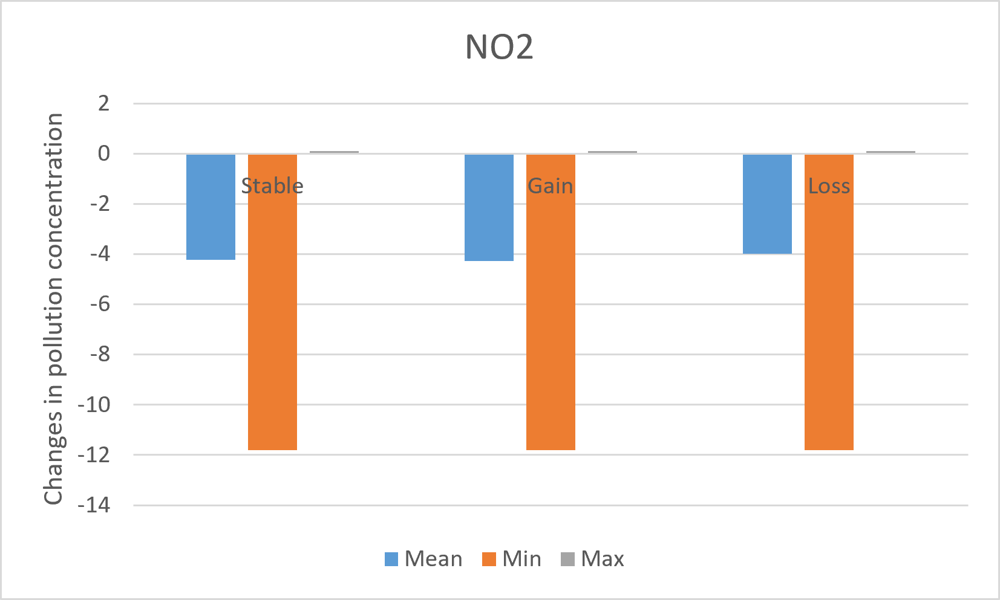
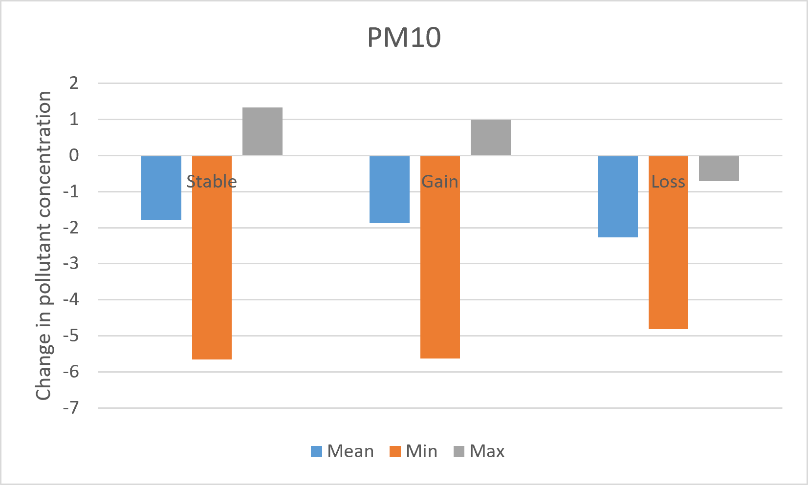
NO2 Bivariate
The bivariate map shows that the vast majority of Romania is characterized by very low NO₂ concentrations (Class
1), even in some densely populated cities like Iasi. Moderate NO₂ concentrations (Class 2) are mainly observed
in Bucharest and a few other major urban centers, such as Timișoara, where population density is also relatively
high.
PM10 Bivariate
The bivariate map indicates that the lowest PM10 concentrations (Class 1) are predominantly found in the
mountainous regions and in the forested areas of eastern Romania, where population density is generally low. In
contrast, most of the remaining territory is characterized by moderate PM10 concentrations (Class 2), regardless
of whether the population density is low or high.
PM2.5 Bivariate
Overall, the map does not reveal a clear spatial association between population density and PM10 concentrations.
Areas with similar pollution classes are observed across different population density classes, suggesting that
population density alone does not explain the spatial distribution of PM10 concentrations in Romania. In
contrast, the map suggests that elevated NO₂ concentrations are concentrated in the largest urban areas, whereas
most of the country exhibits low NO₂ levels.
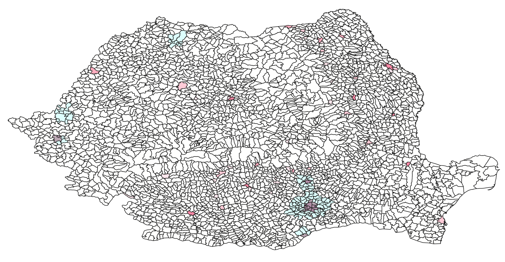
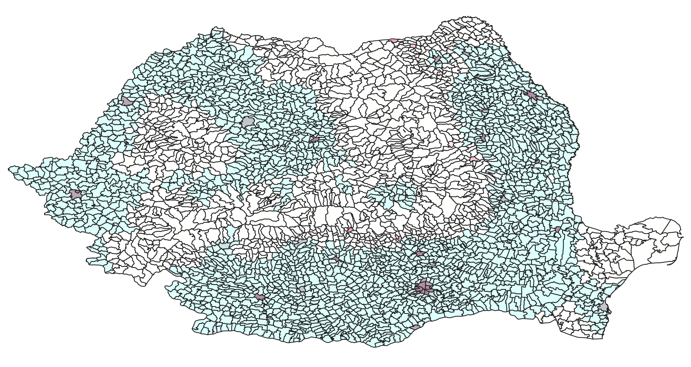
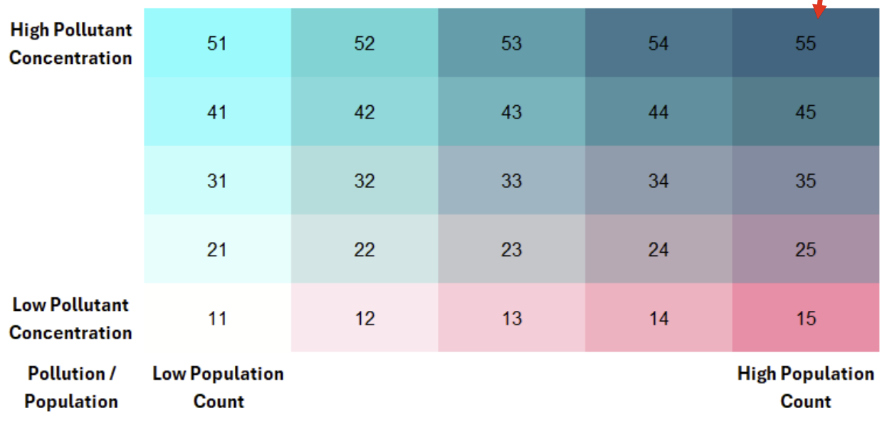
The population exposure analysis shows that 78.7% of Romania's population is exposed to Class 2 PM10
concentrations, while the remaining 21.3% is exposed to Class 1 concentrations.
In the case of NO2, 17.9% of the population is exposed to class 2 concentrations, while 82.1% is exposed to
class 1 concentrations.
Therefore, most of the population is exposed to moderate PM10 concentration levels rather than the lowest
pollution class.
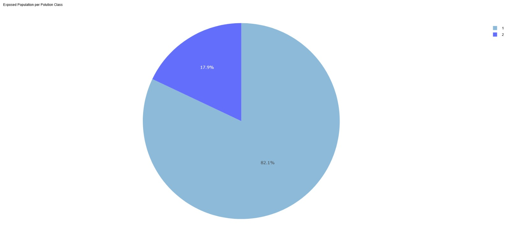